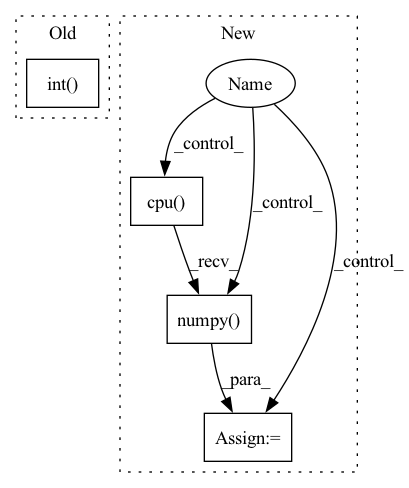

Pattern ID :41612
Before Change
) //// compute loss
pred_val = pred >= 0.5 //// get predictions
y_true += list(targets.int())
y_pred += list(pred_val.data.int() .detach().cpu().numpy())
total_loss += loss
acc = accuracy_score(y_true, y_pred) //// computing accuracy using sklearn"s functionAfter Change
sents2_len,
targets,
_,
_ ,
) in data_loader["val_loader"]:
//// perform forward pass
pred = model(
sent1.to(device),
sent2.to(device),
sents1_len.to(device),
sents2_len.to(device),
)
//// compute loss
loss = criterion(
pred.to(device), torch.autograd.Variable(targets.float()).to(device)
)
y_true += list(targets.float())
y_pred += list(pred.data.float().detach().cpu().numpy() )
total_loss += loss
//// computing accuracy using sklearn"s function
acc = r2_score(y_true, y_pred)In pattern: SUPERPATTERN
Frequency: 3
Non-data size: 4
Instances Fragment ID: 116916682
Project Name: shahrukhx01/siamese-nn-semantic-text-similarity
Commit Name: f3d054dd14ef532c408b1306c3341115777ac22f
Time: 2021-12-30
Author: sk28671@gmail.com
File Name: siamese_sts/trainer/train.py
M Class Name: AnonimousClass
N Class Name: AnonimousClass
M Method Name: evaluate_dev_set(5)
N Method Name: evaluate_dev_set(5)
M Parent Class:
N Parent Class:
M File Name: siamese_sts/trainer/train.py
N File Name: siamese_sts/trainer/train.py
M Start Line: 78
M End Line: 95
N Start Line: 91
N End Line: 116
Before Change
def test_epoch(self, test_iterable_ds):
for _, (X, y) in enumerate(test_iterable_ds):
X = X.to(self.device)
y = y.to(self.device).int()
pred = self.model(X)
[fn(pred, y) for fn in self.metric_fns]
result = {type(fn).__name__: fn.compute().item() for fn in self.metric_fns}
[fn.reset() for fn in self.metric_fns]After Change
y = y.to(self.device)
num_batches += 1
pred = self.model(X)
for fn in self.metric_fns:
if get_package_name(fn) == "torchmetrics":
fn(pred, y.int())
elif get_package_name(fn) == "sklearn":
if type(fn).__name__ not in sklearn_intermediates:
sklearn_intermediates[fn.__name__] = 0
sklearn_intermediates[fn.__name__] += fn(
y.cpu().data.numpy() , pred.cpu().data.numpy())
// torchmetrics compute and reset
for fn in self.metric_fns:
if get_package_name(fn) == "torchmetrics": Fragment ID: 116916683
Project Name: ryantd/veloce
Commit Name: aca7bbb15fbcbae885dd418e7ff969ad4828703e
Time: 2022-01-04
Author: xiaoyu.zhai@hotmail.com
File Name: phetware/epochvisor.py
M Class Name: Epochvisor
N Class Name: Epochvisor
M Method Name: test_epoch(2)
N Method Name: test_epoch(2)
M Parent Class: object
N Parent Class: object
M File Name: phetware/epochvisor.py
N File Name: phetware/epochvisor.py
M Start Line: 126
M End Line: 133
N Start Line: 128
N End Line: 154
Before Change
pred_val = pred >= 0.5 //// get predictions
y_true += list(targets.int().numpy()) //// accumulate targets from batch
y_pred += list(
pred_val.data.int() .detach().cpu().numpy()
) //// accumulate preds from batch
total_loss += loss //// accumulate train loss
After Change
sents2_len,
targets,
_,
_ ,
) in dataloader["train_loader"]:
model.zero_grad()
//// perform forward pass
pred = model(
sent1.to(device),
sent2.to(device),
sents1_len.to(device),
sents2_len.to(device),
)
//// compute loss
loss = criterion(
pred.to(device), torch.autograd.Variable(targets.float()).to(device)
)
//// perform backward pass
loss.backward()
//// update weights
optimizer.step()
//// accumulate targets from batch
y_true += list(targets.float().numpy())
//// accumulate preds from batch
y_pred += list(pred.data.float().detach().cpu().numpy() )
//// accumulate train loss
total_loss += loss Fragment ID: 116916684
Project Name: shahrukhx01/siamese-nn-semantic-text-similarity
Commit Name: f3d054dd14ef532c408b1306c3341115777ac22f
Time: 2021-12-30
Author: sk28671@gmail.com
File Name: siamese_sts/trainer/train.py
M Class Name: AnonimousClass
N Class Name: AnonimousClass
M Method Name: train_model(6)
N Method Name: train_model(6)
M Parent Class:
N Parent Class:
M File Name: siamese_sts/trainer/train.py
N File Name: siamese_sts/trainer/train.py
M Start Line: 16
M End Line: 47
N Start Line: 16
N End Line: 59